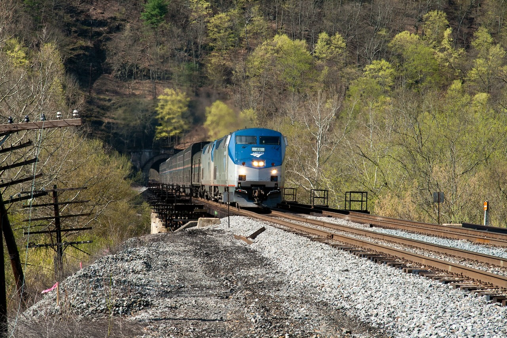

2009 was my year of discovery on Amtrak. That January, I made my first run on the Empire Builder (as recounted in My worst best trip on the Empire Builder) from Chicago to Portland. In June, I took the Lake Shore Limited to Springfield, Massachusetts, starting a long and somewhat complex history with that train. Then, that October, I made my first trip on the Capitol Limited, traveling from Chicago to Washington and back. I’ve made 34 trips on the Capitol Limited, the most I’ve made on any American long-distance train. 23,622 miles is almost enough to circle the globe.
Today the Capitol Limited disappears from Amtrak’s timetables. This change is meant to be temporary, and is driven by two needs. One, Amtrak is conducting maintenance on the East River Tunnels over the next year and needs to reduce the number of movements between Sunnyside Yard and Pennsylvania Station in New York. Two, Amtrak has an on-going shortage of its bilevel Superliner cars. Amtrak’s solution is to take the Silver Star, one of its two New York-Florida trains, and change its northern terminus from New York to Washington. This new train is called the Floridian, and it uses the Silver Star’s single-level equipment.
I understand the decision and I can’t argue with the logic. The Superliner shortage, whatever its root causes, is real. I have concerns about the timekeeping. It’s a long way from Miami to Chicago–47 hours; 2,076 miles–and there are many opportunities for delays. On the other hand, eliminating the engine change for the Silver Star in Washington probably helps. Running single-level cars on the Capitol Limited may open the door to the long-discussed idea of through cars conveyed in Pittsburgh to the Pennsylvanian.
Memories
On October 6, 2009, I was in Milwaukee, attending my first-ever HighEdWeb (another venerable institution going through a rebrand). I left Tuesday afternoon, before the big social event, because I had to be in Washington the next day to prepare for the annual German Studies Association conference. Back then I didn’t have a smart phone and wasn’t carrying a digital camera. My memories are vague. I know I saw some of the American League tie-breaker game between Detroit and Minnesota, but it would have ended well after the Capitol Limited departed Chicago. That pitch hit Inge. Fight me. My strongest memory is sitting in the Sightseer Lounge the next morning, marveling at the fall color along the Youghiogheny and Potomac rivers. My notes say we were six minutes late. On the way back, Liz and I had an encounter with a roughneck in the lower level of the lounge which inspired the “Sharing With The Class” event of the Amtrak Olympics.
I was back on the Capitol Limited in January 2010 for a trip out to Lafayette College. The next calendar year that I didn’t make at least one trip on it was 2023–yes, even in 2020, I was on it in January before the pandemic struck. It was on a Capitol Limited that I met the late Jim Loomis. I did the early morning transfer to the Pennsylvanian in Pittsburgh for the first time in 2012. Saves a few hours off the Washington-Philadelphia leg, and there’s slightly more cell signal around Altoona than Cumberland. Not as pretty though.

The Capitol Limited of my imagination is the mid-2010s train with a baggage car, 2-3 sleepers, a full diner, a Sightseer Lounge, and 2-3 coaches. The scenery between Pittsburgh and Washington demands an observation car, and it was one of the main reasons I preferred that train to the Lake Shore Limited. Going out to Chicago in a sleeper, you made your dinner reservation from the Metropolitan Lounge. You dined as the darkness fell between Chicago and South Bend. When you wake up in the morning, you’re somewhere near Connellsville, Pennsylvania, following the Youghiogheny. After breakfast you decamp to the Sightseer Lounge and watch the scenery. You pass through horse country heading in to DC. Westbound, dinner’s around Harpers Ferry, parked right on the bridge. In the morning, there’s a ground fog in northern Ohio and Indiana as you rush west to Chicago.